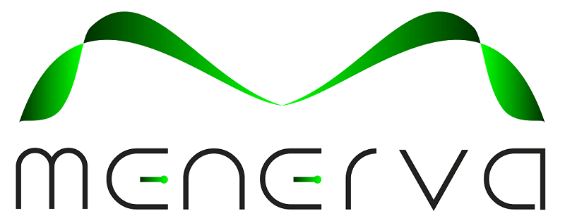

Ho svolto la mia esperienza di FSL presso l’azienda Menerva S.r.l. a Camerata Picena
L’azienda si occupa dello sviluppo e della gestione di sistemi hardware e software dedicati al monitoraggio delle emissioni prodotte dalle aziende.
Attraverso questi sistemi è possibile raccogliere e visualizzare dati relativi ai gas rilevati, permettendo alle aziende di controllare le caratteristiche e i valori delle emissioni.
Durante questa esperienza, insieme a un mio compagno di classe, ho collaborato alla realizzazione di alcuni moduli software personalizzati per il controllo dei dispositivi aziendali.
In particolare, abbiamo utilizzato il linguaggio SQL per la gestione del database, occupandoci dell’organizzazione, del salvataggio e del recupero dei dati.
Questa esperienza mi ha permesso di mettere in pratica alcune conoscenze acquisite durante il percorso scolastico e di sviluppare nuove competenze in ambito informatico.
Ho avuto anche l’opportunità di lavorare in un ambiente professionale, migliorando la capacità di collaborare con altre persone e di affrontare problemi reali.
È stata un’esperienza positiva anche grazie al rapporto creato con i dipendenti dell’azienda, che sono stati disponibili e ci hanno coinvolto nelle attività facendoci sentire parte del gruppo di lavoro.